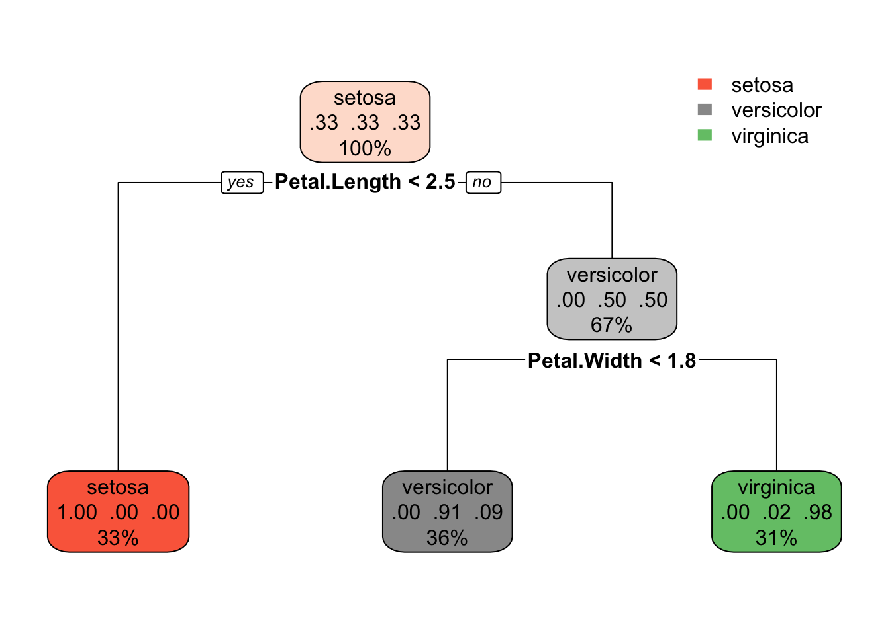
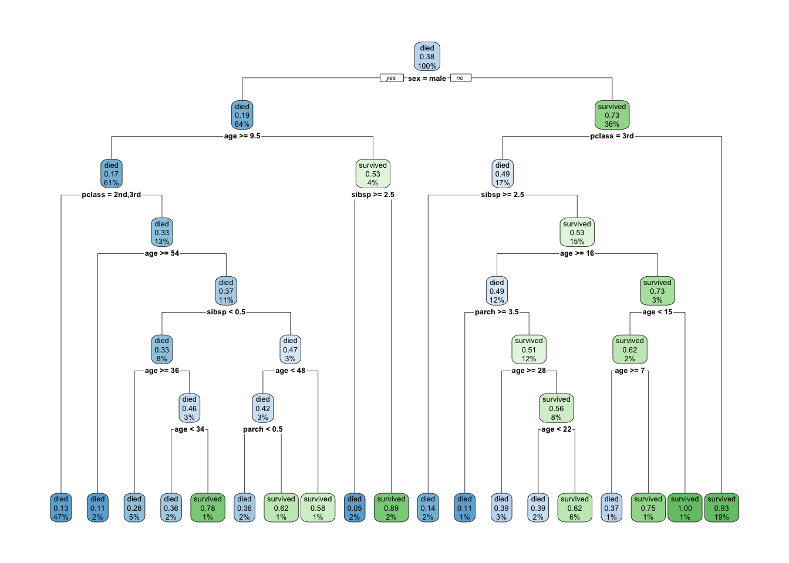
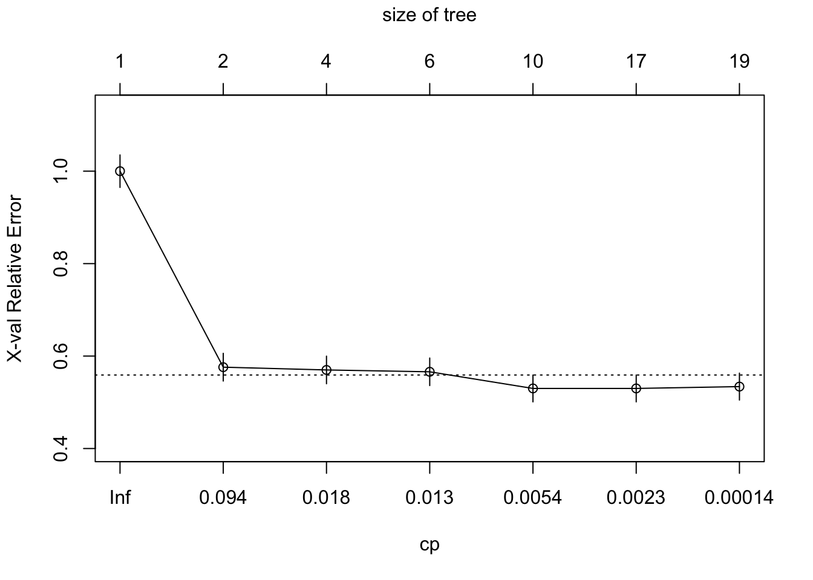
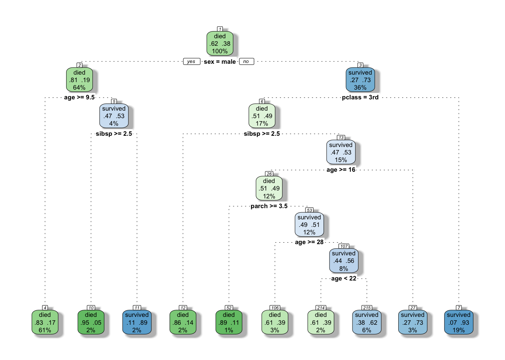
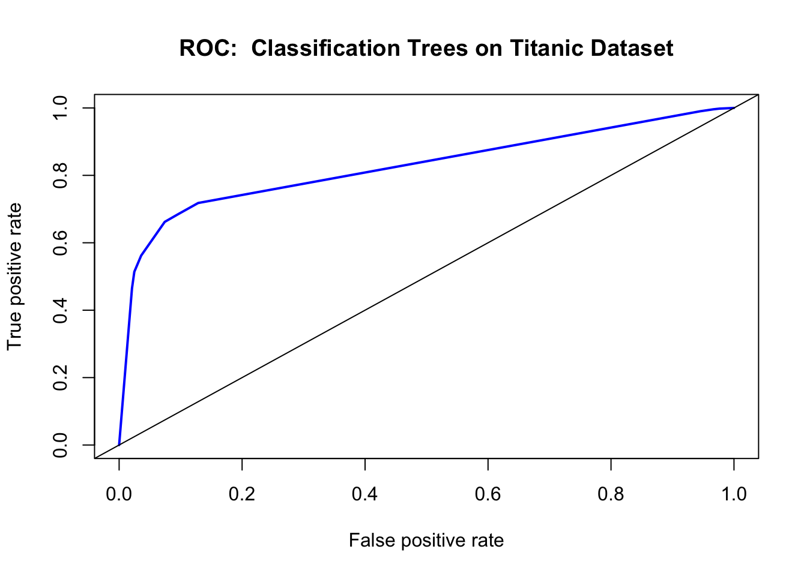

Chapter 6 Trees and Classification
6.1 Introduction
Classification trees are non-parametric methods to recursively partition the data into more “pure” nodes, based on splitting rules.
Logistic regression vs Decision trees. It is dependent on the type of problem you are solving. Let’s look at some key factors which will help you to decide which algorithm to use:
- If the relationship between dependent & independent variable is well approximated by a linear model, linear regression will outperform tree based model.
- If there is a high non-linearity & complex relationship between dependent & independent variables, a tree model will outperform a classical regression method.
- If you need to build a model which is easy to explain to people, a decision tree model will always do better than a linear model. Decision tree models are even simpler to interpret than linear regression!
The 2 main disadventages of Decision trees: Over fitting: Over fitting is one of the most practical difficulty for decision tree models. This problem gets solved by setting constraints on model parameters and pruning (discussed in detailed below).
Not fit for continuous variables: While working with continuous numerical variables, decision tree looses information when it categorizes variables in different categories.
Decision trees use multiple algorithms to decide to split a node in two or more sub-nodes. The creation of sub-nodes increases the homogeneity of resultant sub-nodes. In other words, we can say that purity of the node increases with respect to the target variable. Decision tree splits the nodes on all available variables and then selects the split which results in most homogeneous sub-nodes.
6.2 First example.
Let’s do a CART on the iris dataset. This is the Hello World! of CART.
library(rpart)
library(rpart.plot)
data("iris")
str(iris)## 'data.frame': 150 obs. of 5 variables:
## $ Sepal.Length: num 5.1 4.9 4.7 4.6 5 5.4 4.6 5 4.4 4.9 ...
## $ Sepal.Width : num 3.5 3 3.2 3.1 3.6 3.9 3.4 3.4 2.9 3.1 ...
## $ Petal.Length: num 1.4 1.4 1.3 1.5 1.4 1.7 1.4 1.5 1.4 1.5 ...
## $ Petal.Width : num 0.2 0.2 0.2 0.2 0.2 0.4 0.3 0.2 0.2 0.1 ...
## $ Species : Factor w/ 3 levels "setosa","versicolor",..: 1 1 1 1 1 1 1 1 1 1 ...table(iris$Species)##
## setosa versicolor virginica
## 50 50 50tree <- rpart(Species ~., data = iris, method = "class")
tree## n= 150
##
## node), split, n, loss, yval, (yprob)
## * denotes terminal node
##
## 1) root 150 100 setosa (0.33333333 0.33333333 0.33333333)
## 2) Petal.Length< 2.45 50 0 setosa (1.00000000 0.00000000 0.00000000) *
## 3) Petal.Length>=2.45 100 50 versicolor (0.00000000 0.50000000 0.50000000)
## 6) Petal.Width< 1.75 54 5 versicolor (0.00000000 0.90740741 0.09259259) *
## 7) Petal.Width>=1.75 46 1 virginica (0.00000000 0.02173913 0.97826087) *The method-argument can be switched according to the type of the response variable. It is class for categorial, anova for numerical, poisson for count data and `exp for survival data.
Important Terminology related to Decision Trees
Root Node: It represents entire population or sample and this further gets divided into two or more homogeneous sets.
Splitting: It is a process of dividing a node into two or more sub-nodes.
Decision Node: When a sub-node splits into further sub-nodes, then it is called decision node.
Leaf/ Terminal Node: Nodes do not split is called Leaf or Terminal node.
Pruning: When we remove sub-nodes of a decision node, this process is called pruning. You can say opposite process of splitting.
Branch / Sub-Tree: A sub section of entire tree is called branch or sub-tree.
Parent and Child Node: A node, which is divided into sub-nodes is called parent node of sub-nodes where as sub-nodes are the child of parent node.
rpart.plot(tree)
This is a model with a multi-class response. Each node shows
- the predicted class (setosa, versicolor, virginica),
- the predicted probability of each class,
- the percentage of observations in the node
table(iris$Species, predict(tree, type = "class"))##
## setosa versicolor virginica
## setosa 50 0 0
## versicolor 0 49 1
## virginica 0 5 456.3 Second Example.
Data set is the titanic. This is a model with a binary response.
data("ptitanic")
str(ptitanic)## 'data.frame': 1309 obs. of 6 variables:
## $ pclass : Factor w/ 3 levels "1st","2nd","3rd": 1 1 1 1 1 1 1 1 1 1 ...
## $ survived: Factor w/ 2 levels "died","survived": 2 2 1 1 1 2 2 1 2 1 ...
## $ sex : Factor w/ 2 levels "female","male": 1 2 1 2 1 2 1 2 1 2 ...
## $ age :Class 'labelled' atomic [1:1309] 29 0.917 2 30 25 ...
## .. ..- attr(*, "units")= chr "Year"
## .. ..- attr(*, "label")= chr "Age"
## $ sibsp :Class 'labelled' atomic [1:1309] 0 1 1 1 1 0 1 0 2 0 ...
## .. ..- attr(*, "label")= chr "Number of Siblings/Spouses Aboard"
## $ parch :Class 'labelled' atomic [1:1309] 0 2 2 2 2 0 0 0 0 0 ...
## .. ..- attr(*, "label")= chr "Number of Parents/Children Aboard"ptitanic$age <- as.numeric(ptitanic$age)
ptitanic$sibsp <- as.integer(ptitanic$sibsp)
ptitanic$parch <- as.integer(ptitanic$parch)Actually we can make the table more relevant.
round(prop.table(table(ptitanic$sex, ptitanic$survived), 1), 2)##
## died survived
## female 0.27 0.73
## male 0.81 0.19One can see here that the sum of the percentage add to 1 horizontally. If one want to make it vertically, we use 2.
You can find the default limits by typing ?rpart.control. The first one we want to unleash is the cp parameter, this is the metric that stops splits that aren’t deemed important enough. The other one we want to open up is minsplit which governs how many passengers must sit in a bucket before even looking for a split.
By putting a very low cp we are asking to have a very deep tree. The idea is that we prune it later. So in this first regression on ptitanic we’ll set a very low cp.
library(rpart)
library(rpart.plot)
set.seed(123)
tree <- rpart(survived ~ ., data = ptitanic, cp=0.00001)
rpart.plot(tree)
Each node shows
- the predicted class (died or survived),
- the predicted probability of survival,
- the percentage of observations in the node.
Let’s do a confusion matrix based on this tree.
conf.matrix <- round(prop.table(table(ptitanic$survived, predict(tree, type="class")), 2), 2)
rownames(conf.matrix) <- c("Actually died", "Actually Survived")
colnames(conf.matrix) <- c("Predicted dead", "Predicted Survived")
conf.matrix##
## Predicted dead Predicted Survived
## Actually died 0.83 0.16
## Actually Survived 0.17 0.84Let’s learn a bit more about trees. By using the name function, one can see all the object inherent to the tree function.
A few intersting ones. The `$where component indicates to which leaf the different observations have been assigned.
names(tree)## [1] "frame" "where" "call"
## [4] "terms" "cptable" "method"
## [7] "parms" "control" "functions"
## [10] "numresp" "splits" "csplit"
## [13] "variable.importance" "y" "ordered"How to prune a tree? We want the cp value (with a simpler tree) that minimizes the xerror. So you need to find the lowest Cross-Validation Error. 2 ways to do this. Either the plotcp or the printcp functions. The plotcp is a visual representation of printcp function.
The problem with reducing the `xerror is that the cross-validation error is a random quantity. There is no guarantee that if we were to fit the sequence of trees again using a different random seed that the same tree would minimize the cross-validation error.
A more robust alternative to minimum cross-validation error is to use the one standard deviation rule: choose the smallest tree whose cross-validation error is within one standard error of the minimum. Depending on how we define this there are two possible choices. The first tree whose point estimate of the cross-validation error falls within the ± 1 xstd of the minimum. On the other hand the standard error lower limit of the tree of size three is within + 1 xstd of the minimum.
Either of these is a reasonable choice, but insisting that the point estimate itself fall within the standard error limits is probably the more robust solution.
As discussed earlier, the technique of setting constraint is a greedy-approach. In other words, it will check for the best split instantaneously and move forward until one of the specified stopping condition is reached. Let’s consider the following case when you’re driving: There are 2 lanes: A lane with cars moving at 80km/h A lane with trucks moving at 30km/h At this instant, you are a car in the fast lane and you have 2 choices: Take a left and overtake the other 2 cars quickly Keep moving in the present lane Lets analyze these choice. In the former choice, you’ll immediately overtake the car ahead and reach behind the truck and start moving at 30 km/h, looking for an opportunity to move back right. All cars originally behind you move ahead in the meanwhile. This would be the optimum choice if your objective is to maximize the distance covered in next say 10 seconds. In the later choice, you sale through at same speed, cross trucks and then overtake maybe depending on situation ahead. Greedy you!
This is exactly the difference between normal decision tree & pruning. A decision tree with constraints won’t see the truck ahead and adopt a greedy approach by taking a left. On the other hand if we use pruning, we in effect look at a few steps ahead and make a choice. So we know pruning is better.
printcp(tree)##
## Classification tree:
## rpart(formula = survived ~ ., data = ptitanic, cp = 1e-05)
##
## Variables actually used in tree construction:
## [1] age parch pclass sex sibsp
##
## Root node error: 500/1309 = 0.38197
##
## n= 1309
##
## CP nsplit rel error xerror xstd
## 1 0.4240000 0 1.000 1.000 0.035158
## 2 0.0210000 1 0.576 0.576 0.029976
## 3 0.0150000 3 0.534 0.570 0.029863
## 4 0.0113333 5 0.504 0.566 0.029787
## 5 0.0025714 9 0.458 0.530 0.029076
## 6 0.0020000 16 0.440 0.530 0.029076
## 7 0.0000100 18 0.436 0.534 0.029157plotcp(tree)
tree$cptable[which.min(tree$cptable[,"xerror"]),"CP"]## [1] 0.002571429See if we can prune slightly the tree
bestcp <- tree$cptable[which.min(tree$cptable[,"xerror"]),"CP"]
tree.pruned <- prune(tree, cp = bestcp)
#this time we add a few arguments to add some mojo to our graphed tree.
#Actually this will give us a very similar graphed tree as rattle (and we like that graph!)
rpart.plot(tree.pruned, extra=104, box.palette="GnBu",
branch.lty=3, shadow.col="gray", nn=TRUE)
conf.matrix <- round(prop.table(table(ptitanic$survived, predict(tree.pruned, type="class"))), 2)
rownames(conf.matrix) <- c("Actually died", "Actually Survived")
colnames(conf.matrix) <- c("Predicted dead", "Predicted Survived")
conf.matrix##
## Predicted dead Predicted Survived
## Actually died 0.57 0.05
## Actually Survived 0.13 0.25Another way to check the output of the classifier is with a ROC (Receiver Operating Characteristics) Curve. This plots the true positive rate against the false positive rate, and gives us a visual feedback as to how well our model is performing. The package we will use for this is ROCR.
library(ROCR)
fit.pr = predict(tree.pruned, type="prob")[,2]
fit.pred = prediction(fit.pr, ptitanic$survived)
fit.perf = performance(fit.pred,"tpr","fpr")
plot(fit.perf,lwd=2,col="blue",
main="ROC: Classification Trees on Titanic Dataset")
abline(a=0,b=1)
Ordinarily, using the confusion matrix for creating the ROC curve would give us a single point (as it is based off True positive rate vs false positive rate). What we do here is ask the prediction algorithm to give class probabilities to each observation, and then we plot the performance of the prediction using class probability as a cutoff. This gives us the “smooth” ROC curve.
6.4 How does a tree decide where to split?
A bit more theory, before we go further. This part has been taken from this great tutorial.
6.5 Third example.
The dataset I will be using for this third example is the “Adult” dataset hosted on UCI’s Machine Learning Repository. It contains approximately 32000 observations, with 15 variables. The dependent variable that in all cases we will be trying to predict is whether or not an “individual” has an income greater than $50,000 a year.
Here is the set of variables contained in the data.
- age – The age of the individual
- type_employer – The type of employer the individual has. Whether they are government, military, private, an d so on.
- fnlwgt – The # of people the census takers believe that observation represents. We will be ignoring this variable
- education – The highest level of education achieved for that individual
- education_num – Highest level of education in numerical form
- marital – Marital status of the individual
- occupation – The occupation of the individual
- relationship – A bit more difficult to explain. Contains family relationship values like husband, father, and so on, but only contains one per observation. I’m not sure what this is supposed to represent
- race – descriptions of the individuals race. Black, White, Eskimo, and so on
- sex – Biological Sex
- capital_gain – Capital gains recorded
- capital_loss – Capital Losses recorded
- hr_per_week – Hours worked per week
- country – Country of origin for person
- income – Boolean Variable. Whether or not the person makes more than $50,000 per annum income.
6.6 References
- Trees with the rpart package
- Wholesale customers Data Set Origin of the data set of first example.
- Titanic: Getting Started With R - Part 3: Decision Trees. First understanding on how to read the graph of a tree.
- Classification and Regression Trees (CART) with rpart and rpart.plot. Got the
Titanicexample from there as well as a first understanding on pruning.
- Statistical Consulting Group. We learn here how to use the ROC curve. And we got out of it the
adultdataset. - A Complete Tutorial on Tree Based Modeling from Scratch (in R & Python). This website is a real gems as always.
- Stephen Milborrow. rpart.plot: Plot rpart Models. An Enhanced Version of plot.rpart., 2016. R Package. It is important to cite the very generous people who dedicates so much of their time to offer us great tool.